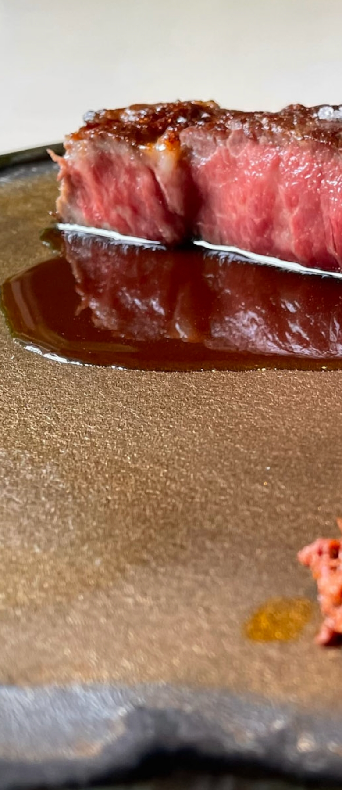
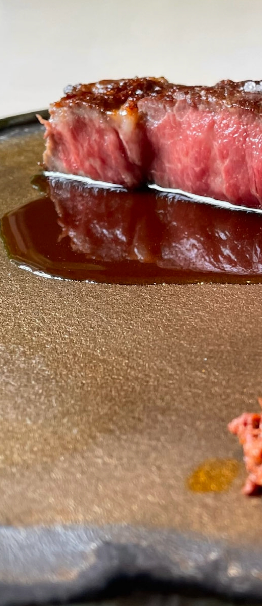

「あーすん」、それは沖縄の方言で『合わせる』。
生産者の想い、料理人の技と愛情、そしてお客様の笑顔。
全てが調和し、美味しさが生まれる瞬間をお届けしています。
あーすんについて

 

Feature01
こだわりの食材、
やんばるの息吹。
厳選された食材は、
沖縄北部（やんばる）地域から。
シェフが直接足を運び、
生産者様との対話を通じて
育てられた食材たち。
特に「今帰仁アグー」は、
その貴重な存在感で食の舞台を彩ります。
Feature02
ソムリエの贈り物、
ワインの調べ。
お料理に寄り添うように、
当店のソムリエが厳選したワインが
お待ちしています。
食とワインのハーモニーが、
贅沢なひと時を生み出します。
ご家族や大切な方とのランチ、
特別なディナーデートに。
島cuisine あーすんのコースは、
食材への
こだわりとシェフの技が織りなす、
本物の味わいをお届けいたします。
ランチとディナー、それぞれの時間に
合った
贅沢なひとときをご堪能ください。
自然の息吹を感じるランチタイム
島の恵みを堪能できる特別なランチ。
旬の食材をふんだんに使用した
軽やかな前菜から、
本格的なメインディッシュまで、
贅沢なランチタイムをお楽しみください。
島の美味、夜の調べ
コースは前日までの予約が必要となります。
お電話にてご予約くださいませ。
お電話でのお問い合わせ
098-851-5360